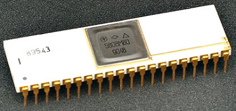

www.spetsialist-mx.ru
САЙТ О ПК "СПЕЦИАЛИСТ" И ЕГО КЛОНАХ
| |
|
| ГЛАВНАЯ | |
| МИКРОПРОЦЕССОР | |
| СИНХРОГЕНЕРАТОР | |
| ПАМЯТЬ | |
| ИНТЕРФЕЙС | |
| КЛОНЫ | |
| ПРОГРАММЫ | |
| ИГРЫ | |
| СПЕЦИАЛИСТ МХ | |
| ПЛИС | |
| ССЫЛКИ | |
| ОБРАТНАЯ СВЯЗЬ |
_
МИКРОПРОЦЕССОР К580ВМ80
БИС КР580ВМ80А является восьмиразрядным параллельным центральным микропроцессором с фиксированной системой команд, выполняющим арифметические и логические операции над двоичными числами, с представлением отрицательных чисел в дополнительном коде. Также возможна обработка двоично - десятичных чисел. Структурная схема микропроцессора показана на рисунке.
Узлы микропроцессора объединены общей внутренней магистралью. С внешними узлами системы он связан через восьмиразрядный буферный регистр данных и шестнадцатеричный буферный регистр адреса, а также линиями управляющих сигналов. В составе микропроцессора имеется также шестнадцатиразрядный указатель стека, организуемого во внешней памяти. Регистры адресный и данных представляют собой устройства с трёх стабильным состоянием. Адресный регистр работает на выдачу, а регистр данных - на приём или выдачу информации, или могут отключить элемент от внешней шины (состояние высокого импеданса). Набор управляющих сигналов позволяет организовать в системе прямой доступ к памяти и прерывания основной программы посредством интерфейсных БИС.
Выполнение команд происходит в течение от одного до пяти машинных циклов. Каждый из них связан с обращенком к памяти как к устройствам ввода - вывода и занимает от трёх до пяти тактов. В первом машинном цикле происходит выборка из памяти и приём в регистр команды первого байта команды (код операции), который после дешифрации преобразуется в устройстве управления в набор соответствующих управляющих сигналов. В последующих тактах этого же машинного цикла происходит исполнение операции. Для выполнения простой команды требуется всего один машинный цикл. Если же для выполнения команды необходима дополнительная выборка байтов информации, то начинается второй машинный цикл. Если второго цикла недостаточно, то организуются последующие машинные циклы для дальнейшего обмена данными.
В перечень команд, исполняемых микропроцессором, входят арифметические команды, логические, пересылочные, команды загрузки, хранения, сдвига, ввода - вывода, команды переходов и связи с подпрограммами.
Кроме основного режима работы микропроцессора - записи, чтения и переработки информации, - существуют ещё специфические режимы, когда микропроцессор передаёт управление системой интерфейсными БИС. Это режимы прерывания обработки основной программы и прямого доступа к памяти. В первом случае запросы на прерывания поступают от внешних устройств на вход "Запрос прерывания". Элемент отвечает сигналом "Разрешение прерывания" и переводит шины адресные и данных в состояние высокого импеданса. В случае запроса на прямой доступ к памяти в элемент поступает входной сигнал "Захват", он отвечает выходным сигналом "Подтверждение захвата" и путём перехода шин адресной и данных в высокоимпедансное состояние отключается от системных магистралей.
Схемно - графическое обозначение микропроцессора показано на рисунке.
D0...D7 - трёхстабильная шина данных, предназначенная для приёма и выдачи данных и команд между микропроцессором, памятью и внешними устройствами ввода - вывода;
A0...A15 - трёхстабильные выходы адресной шины, предназначенные для обращения к ячейкам памяти или к устройствам ввода - вывода;
F1, F2 - входные сигналы тактирующих импульсов;
RES - входной сигнал сброса микропроцессора;
RDY - входной сигнал, информирующий микропроцессор о готовности памяти (внешнего устройства) ввести или принять информацию по шине данных;
HOLD - входной сигнал означающий запрос внешних устройств системы на предоставление им магистральных шин (это возможно при переходе адресных шин и шин данных микропроцессора в высокоимпеденсное состояние);
INT - входной сигнал от внешнего устройства, информирующий о запросе им прерывания основной программы;
HLDA - выходной сигнал реакции на захват, подтверждающий, что шины адресные и данных отключены от системных магистралей;
WAIT - выходной сигнал свидетельствующий, что микропроцессор находится в состоянии ожидания;
INTE - выходной сигнал разрешающий прерывание основной программы;
RD - выходной сигнал подтверждающий приём информации с магистрали данных (от памяти или устройства ввода - вывода);
/WR - выходной сигнал подтверждающий выдачу байта информации на магистраль данных (или записи в память или к устройству ввода - вывода);
SYNC - выходной сигнал свидетельствующий о начале машинного цикла;
VCC - питание +5 В;
VDD - питание +12 В;
VSS - питание -5 В;
GND - общий провод.
ПОДКЛЮЧЕНИЕ МИКРОПРОЦЕССОРА И ДРУГИЕ ЧАСТИ СХЕМЫ
Арбитр ОЗУ выполнен на триггере DD12.2. Этот узел вырабатывает сигнал /W длительностью 500 нс в том случае, если на выводе 19 DD43 (микропроцессора) появляется сигнал SYNC, предваряющий такт обращения процессора к ОЗУ. Если при этом отсутствует сигнал /RD (чтение), что неизбежно означает начало цикла записи информации в ОЗУ, на выводе 6 DD7.2 вырабатывается сигнал /WE (запись в ОЗУ), совпадающий во времени с сигналами /V1, /V2, /V3 выборки микросхем ОЗУ.
Сигнал «сброс» обрабатывается триггером DD12.1. Длительность сигнала, поступающего с выхода триггера на вход «сброс» микропроцессора и интерфейса, кратна периоду кадровой развертки, то есть во много раз больше длительности пяти машинных циклов, что необходимо для надежного сброса микропроцессора. Действие сигнала «сброс» не нарушает регенерацию ОЗУ.